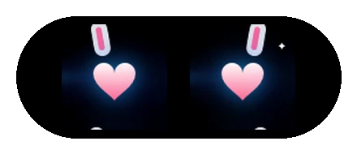
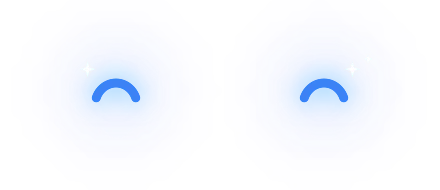
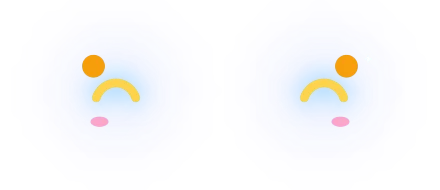
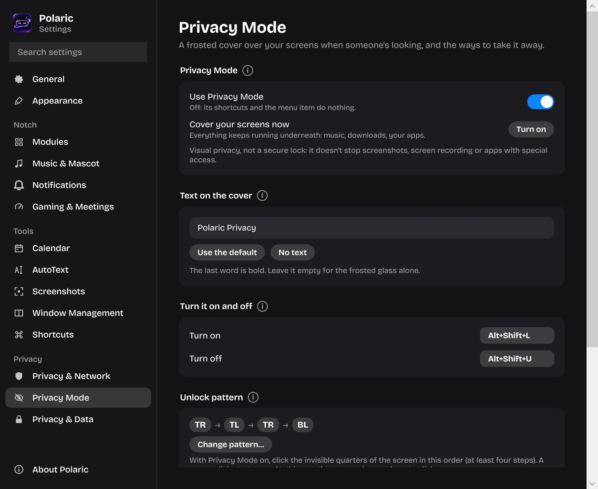

Your notch, alive.
Polaric turns the notch at the top of your MacBook or Windows screen into a living island: your music, every notification, meetings, AI alerts, sticky memos, Privacy Mode and 74 little mascots.
Free · version 1.4.2.1 · downloads so far
Music: what's playing, and the lyrics line by line.
A day with Polaric
Four minutes, morning to night: the playlist, the pings, the stand-up, the AI that finishes while you're away, and the moment someone walks up behind you.
Every ping, one place
No pile of banners in the corner. Each one shows in the notch for a moment, then gets out of the way. Tap a tile and the notch at the top of this page plays it.
Privacy Mode
Someone walks up behind you. Press ⌥⇧L on a Mac or Alt+Shift+L on Windows and every screen goes dark frosted glass.
- Nothing stops underneath. Code keeps compiling, your AI keeps working, music keeps playing. It's only a layer on top.
- Your words, or none. Write what the glass says, or leave it clean.
- Unlock your way. ⌥⇧U / Alt+Shift+U, your secret pattern of screen corners, or lock the computer and sign back in.
- Visual privacy, not a secure lock: for real security, lock your computer.
Polaric Privacy
Press the button or ⌥⇧L. Then unlock by tapping the corners in the default order: top right, top left, top right, bottom left.
Make it yours
Every piece of Polaric is a setting. Try a few here.
40 themes, 20 glow coloursPick one: the notch at the top follows.
Floating islandAnchored to the camera, or anywhere you like.
- WhatsApp and chats
- AI tasks
- Network problems
Which notificationsMute a noisy chat, choose how long they stay.
Every shortcutChange any of them; taken keys are refused.
Bricolage GrotesqueOne of 7 fonts, plus text size and panel opacity.
Your notch, alive.
Two languagesAll of Polaric, Settings included.
Meet the crew
74 mascots live beside your camera, 55 of them new in 1.4. They dance to your music, cheer when a task is done, doze off when you're away and wave when you're back. Here are twelve.





One day with it
7:48 The playlist starts. The lyrics move line by line.
9:59 The stand-up is in a minute. Join is one click.
11:20 The AI finished while you made coffee.
21:41 On Windows: FPS, and a mascot that cheers.
Everything in Polaric
- Music and synced lyrics
- What's playing, controls and the sung line under the notch.
- Sticky memo
- ⌥M or Alt+M: your notes fly out of the notch, 11 looks.
- AI Assistant (new)
- Select a question, press ⌥⇧A: the answer shows in the notch. Your own Gemini, ChatGPT or Claude key.
- Teleprompter
- Your script under the camera, rolling while you speak.
- Privacy Mode
- Frosted glass over every screen, and on by itself when you step away.
- App Lock (new)
- Chosen apps open only after Touch ID, Windows Hello or your password.
- Remote Active (new)
- The notch says when someone controls your computer, and who.
- AI task alerts
- Done, or asking you something: one click to its terminal or chat.
- Email and chats
- Who wrote and the subject, never your message.
- Prayer Times
- Five daily prayers for your city, Kemenag RI for Indonesia.
- Meetings and calendar
- Today's meetings, live minutes and Join in one click.
- Meeting Awareness
- Mic and Cam during calls, Muted read from the call.
- Data Usage Today
- Everything down and up since midnight, every Wi-Fi.
- Privacy & Network
- Camera, microphone and screen sharing right now, and your speed.
- Text capture
- Copy text from anything on screen; a QR code gives its link.
- Screenshots (more)
- Area, window, screen, scrolling pages, pinned; mark up and blur; always sharp.
- Screen recording (new)
- Record your screen as a video or a GIF.
- Window Snap
- Drag a window to the notch and drop it into a layout.
- AutoText
- A short code becomes a phrase, an email or a report.
- Timer and to-do
- Focus sessions and reminders that pop up when due.
- Ambient sounds
- Rain, ocean, fireplace and forest to work to.
- Clipboard history
- What you copied recently, kept in memory only.
- AI usage limits
- See your limits and get an alert near the edge.
- System alerts
- Volume, battery, Wi-Fi, network problems and a public Wi-Fi warning.
- Game Awareness
- Your game's real FPS with a mascot that reacts (Windows).
- Idle clock
- A calm clock with your mascot when nothing's on (Windows).
- Browser-Aware Mode
- Heading for your tabs folds everything out of the way.
- Floating island
- Anchored to the top, or anywhere you like.
- Your look
- 40 themes, 20 glow colours, 7 fonts, 74 mascots.
- Bahasa Indonesia
- All of Polaric in English or Bahasa Indonesia.
- Help and search
- An ⓘ with a moving picture for every setting.
- Backup
- One file, locked with your own password, that restores on Mac and on Windows.
- Private, and up to date
- No tracking. Updates itself and keeps your settings.
- Pages you choose
- Turn any page off and put the rest in your order.
Same Polaric, Mac and Windows

macOS 14 or later
MacBook with or without a notch. Shortcuts with ⌥ and ⌘: ⌥⌘N opens the notch, ⌥O copies text, ⌥⇧S takes a screenshot, ⌥⇧L Privacy Mode. Meetings from the Calendar app, and it can replace the volume and brightness popups.

Windows 10 and 11
The notch sits at the top centre of the screen. Ctrl+Alt+N, Alt+O, Alt+Shift+S, Alt+Shift+L. Game Awareness with real FPS, an idle clock, and meetings from your Google Calendar's address.
Getting started
- Mac: open the DMG, drag Polaric into Applications, then switch Polaric on in System Settings › Privacy & Security › Accessibility.
- Windows: run the setup. If SmartScreen appears, click More info › Run anyway.
- Polaric updates itself from then on and keeps every setting.
New in 1.4.2
- AI Assistant: select a question, press ⌥⇧A (Alt+Shift+A), and the answer with a short explanation shows in the notch
- Works with your own Gemini, ChatGPT or Claude key: Polaric recognises it, tests the connection and lists the models
- Screenshots can do much more: capture bar, window, whole screen, last area, pinned, self-timer, scrolling capture
- Screenshot editor: blur, draw, box, circle, arrow and text; every shortcut can be changed
- Record your screen as a video or a GIF
- App Lock with Touch ID, Windows Hello or your own password, and Remote Active when someone controls your computer
- Backups are locked with a password you choose, and everything Polaric keeps is encrypted
How's it working?
Pick one to five stars here, then star us on GitHub and tell us more in a review.
Buy us a coffee
If Polaric makes your day a little better, a coffee or a tip gives us more time to build new features, polish the details and fix bugs.
Support PolaricNo pressure at all: using Polaric and telling us what you think already helps a lot. Thank you for being part of Polaric's journey.